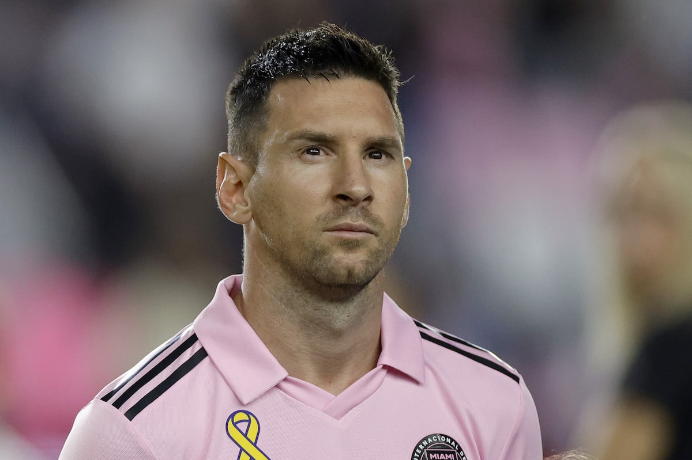
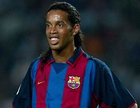

1. Cristiano Ronaldo

Cristiano Ronaldo dos Santos Aveiro (born 5 February 1985) is a Portuguese professional footballer who plays as a forward.
2. Lionel Messi
Lionel Andrés "Leo" Messi (born 24 June 1987) is an Argentine professional footballer who plays as a forward.
3. Ronaldinho
Ronaldo de Assis Moreira (born 21 March 1980), commonly known as Ronaldinho Gaúcho or simply Ronaldinho, is a Brazilian former professional footballer.